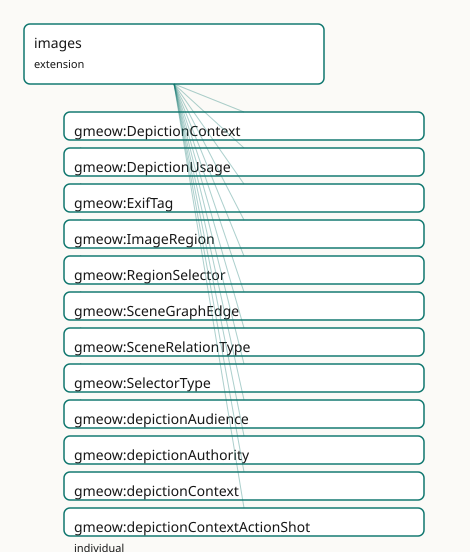

GMEOW Images Module
- IRI: https://blackcatinformatics.ca/gmeow/slices/images
- Tier: extension
Group: extensions
What This Slice Covers
This slice owns 64 terms and contributes 20 mapping or projection rows. Use it when its terms match the native fact you want to preserve; use the linkage tables to see how those facts leave GMEOW for consumer vocabularies.
Dependencies
Consumers
- High-fidelity depiction (regions, scene graphs) atop core
MediaObject; the gmeow-image CLI.
Local Map

Terms
Classes
| Term | Label | Definition |
|---|---|---|
gmeow:DepictionContext |
Depiction Context | The context in which an image depicts an entity — a VALUE vocabulary (individuals, never subclasses). Work, family, childhood, portrait, candid, formal, and so... |
gmeow:DepictionUsage |
Depiction Usage | A reified, context-dependent depiction of an entity by an image — an observation in the universal claim stack: an entity (depictionSubject) is shown in a... |
gmeow:ExifTag |
EXIF Tag | A reified EXIF metadata tag of a media object — a tag identifier (gmeow:exifTagId, e.g. 'FNumber'), its value (gmeow:exifTagValue, e.g. 'f/2.0'), and a human-r... |
gmeow:ImageRegion |
Image Region | A region within an image — a structural part of a gmeow:MediaObject, described by a gmeow:RegionSelector that encodes its boundaries. The counterpart of Conten... |
gmeow:RegionSelector |
Region Selector | The encoding descriptor for an image region — carries the selector type (a gmeow:SelectorType value) and the raw selector value (SVG path, pixel coordinates, m... |
gmeow:SceneGraphEdge |
Scene Graph Edge | A reified spatial or semantic relationship between two image regions — a gufo:Relator mediating a subject region, an object region, a relation type, and a conf... |
gmeow:SceneRelationType |
Scene Relation Type | The spatial or semantic relation in a scene-graph edge — a VALUE vocabulary (individuals, never subclasses). leftOf, rightOf, above, below, inside, touching, n... |
gmeow:SelectorType |
Selector Type | The encoding kind of a region selector — a VALUE vocabulary (individuals, never subclasses). SVG path, pixel rectangle, fractional rectangle, polygon, RLE mask... |
Properties
| Term | Label | Definition |
|---|---|---|
gmeow:depictionAudience |
depiction audience | The audience or scope for which the depiction is intended — an Agent, a Group/Family, or a locale community. Range is gmeow:Entity to admit all of them. Non-fu... |
gmeow:depictionAuthority |
depiction authority | The authority behind a depiction usage — the gmeow:Agent (a photographer, a national archive, a self-asserting individual) that confers or sanctions the depict... |
gmeow:depictionContext |
depiction context | The context in which the image depicts the subject — work, family, childhood, portrait, candid, etc. A gmeow:DepictionContext value. Functional per relator: on... |
gmeow:depictionImage |
depiction image | The image (MediaObject) that depicts the subject in a depiction usage. Functional per relator: one image per DepictionUsage. |
gmeow:depictionInterval |
depiction interval | The time interval over which the depiction usage held. A relator carries its period this way (matching gmeow:usageInterval, gmeow:relationshipInterval) rather... |
gmeow:depictionSubject |
depiction subject | The entity that is depicted in a depiction usage. Functional per relator: one subject per DepictionUsage. |
gmeow:exifTagId |
EXIF tag id | The EXIF tag identifier — 'FNumber', 'ExposureTime', 'ColorSpace', 'GPSImgDirection'. The machine key; projects to schema:PropertyValue/propertyID. |
gmeow:exifTagValue |
EXIF tag value | The value of an EXIF tag — 'f/2.0', '1/1595', 'sRGB'. Projects to schema:PropertyValue/value. The human-readable tag name ('Aperture') rides rdfs:label → schem... |
gmeow:hasExifTag |
has EXIF tag | Relates a media object to one of its reified EXIF tags. Non-functional: an image carries many tags. Projects to schema:exifData. |
gmeow:hasLogo |
has logo | The media object that serves as an entity's logo — its emblematic, identity-bearing image. An organization, software project, dataset, place, or product may ca... |
gmeow:hasRegion |
has region | Relates an image to a region within it. Non-functional: an image may have many regions. Inverse of gmeow:regionOf. |
gmeow:regionLabel |
region label | A human-readable label for the region — e.g. 'face', 'car', 'building facade'. |
gmeow:regionOf |
region of | A region is part of exactly one image. Functional per region: one containing image per ImageRegion. Inverse of gmeow:hasRegion. |
gmeow:regionSelector |
region selector | The selector that describes this region's boundaries. Functional per region: one selector per ImageRegion. |
gmeow:sceneConfidence |
scene confidence | The confidence of this scene-graph edge, as a decimal in [0.0, 1.0]. Functional: one confidence value per edge. |
gmeow:sceneObject |
scene object | The object region in a scene-graph edge — the region toward which the relation points. Functional per edge: one object per SceneGraphEdge. |
gmeow:sceneRelation |
scene relation | The spatial or semantic relation of this edge — a gmeow:SceneRelationType value. Functional: one relation per edge. |
gmeow:sceneSubject |
scene subject | The subject region in a scene-graph edge — the region from which the relation originates. Functional per edge: one subject per SceneGraphEdge. |
gmeow:selectorType |
selector type | The encoding kind of this selector — a gmeow:SelectorType value. Functional: one kind per selector. |
gmeow:selectorValue |
selector value | The raw selector data — an SVG path string, a pixel rectangle (x,y,w,h), a fractional rectangle, a polygon coordinate list, an RLE-encoded mask string, a DICOM... |
Individuals
| Term | Label | Definition |
|---|---|---|
gmeow:depictionContextActionShot |
action shot | A depiction capturing the subject in motion or performing an activity. |
gmeow:depictionContextCandid |
candid | An unposed, spontaneous depiction. |
gmeow:depictionContextChildhood |
childhood | A depiction from the subject's childhood. |
gmeow:depictionContextEvent |
event | A depiction at a specific event or occasion. |
gmeow:depictionContextFamily |
family | A depiction in a family or domestic context. |
gmeow:depictionContextFormal |
formal | A formal, staged depiction (ceremonial, official, professional). |
gmeow:depictionContextNow |
now / current | A current depiction — the most recent or presently valid image. |
gmeow:depictionContextPortrait |
portrait | A posed or formal portrait. |
gmeow:depictionContextProfessional |
professional | A depiction in a professional or occupational context. |
gmeow:depictionContextSelfPortrait |
self-portrait | A depiction created by the subject of themselves. |
gmeow:depictionContextSocial |
social | A depiction in a social or recreational context. |
gmeow:depictionContextWork |
work | A depiction in a work or professional context — a headshot, product photo, or institutional portrait. |
gmeow:sceneRelationAbove |
above | The subject region is above the object region. |
gmeow:sceneRelationBelow |
below | The subject region is below the object region. |
gmeow:sceneRelationEating |
eating | The subject region is eating the object region. |
gmeow:sceneRelationFarFrom |
far from | The subject region is far from the object region. |
gmeow:sceneRelationHolding |
holding | The subject region is holding the object region. |
gmeow:sceneRelationInside |
inside | The subject region is inside the object region. |
gmeow:sceneRelationLeftOf |
left of | The subject region is to the left of the object region. |
gmeow:sceneRelationNear |
near | The subject region is near the object region. |
gmeow:sceneRelationPartOf |
part of | The subject region is a part of the object region (mereological). |
gmeow:sceneRelationPlaying |
playing | The subject region is playing with the object region. |
gmeow:sceneRelationRiding |
riding | The subject region is riding the object region. |
gmeow:sceneRelationRightOf |
right of | The subject region is to the right of the object region. |
gmeow:sceneRelationSameAs |
same as | The subject region depicts the same entity as the object region (co-reference). |
gmeow:sceneRelationTouching |
touching | The subject region touches the object region. |
gmeow:sceneRelationWearing |
wearing | The subject region is wearing the object region. |
gmeow:selectorTypeCocoRleMask |
COCO RLE mask | A COCO dataset run-length encoded mask. |
gmeow:selectorTypeDicomSegMask |
DICOM-SEG mask | A DICOM Segmentation mask reference. |
gmeow:selectorTypeFractionalRectangle |
fractional rectangle | A fractional-coordinate rectangle (x, y, width, height) in [0.0, 1.0] relative to image dimensions. |
gmeow:selectorTypePixelMask |
pixel mask | A per-pixel binary or integer mask. |
gmeow:selectorTypePixelRectangle |
pixel rectangle | A pixel-coordinate rectangle (x, y, width, height). |
gmeow:selectorTypePolygonPath |
polygon path | A polygon defined by a list of (x, y) coordinate pairs. |
gmeow:selectorTypeRunLengthEncoded |
run-length encoded | A run-length encoded binary mask. |
gmeow:selectorTypeSvgPath |
SVG path | An SVG path string (W3C Web Annotation oa:SvgSelector). |
gmeow:selectorTypeWebAnnotationFragment |
Web Annotation fragment | A W3C Web Annotation Media Fragment (xywh=..., t=...). |
Linkages
- Rows: 20
- Projection profiles:
foaf,iiif,schema-org - External vocabularies:
foaf,iiif,oa,rdf,schema,wd
| Source | Kind | Profile | Predicate/Relation | Target | Evidence |
|---|---|---|---|---|---|
gmeow:ImageRegion |
equivalence | - |
skos:closeMatch | iiif:Annotation | gmeow-images.sssom.tsv; gmeow:eqImg063; confidence 0.8 |
gmeow:ImageRegion |
equivalence | - |
skos:closeMatch | oa:SpecificResource | gmeow-images.sssom.tsv; gmeow:eqImg010; confidence 0.85 |
gmeow:ImageRegion |
equivalence | - |
skos:closeMatch | wd:Q10884 | gmeow-images.sssom.tsv; gmeow:eqImg040; confidence 0.75 |
gmeow:RegionSelector |
equivalence | - |
skos:closeMatch | oa:Selector | gmeow-images.sssom.tsv; gmeow:eqImg011; confidence 0.85 |
gmeow:SceneGraphEdge |
equivalence | - |
skos:closeMatch | wd:Q215032 | gmeow-images.sssom.tsv; gmeow:eqImg041; confidence 0.7 |
gmeow:hasExifTag |
equivalence | - |
skos:closeMatch | schema:exifData | gmeow-properties.sssom.tsv; gmeow:eqProperties093; confidence 0.9 |
gmeow:hasLogo |
equivalence | - |
skos:closeMatch | foaf:logo | gmeow-properties.sssom.tsv; gmeow:eqProperties095; confidence 0.95 |
gmeow:hasLogo |
equivalence | - |
skos:closeMatch | schema:logo | gmeow-properties.sssom.tsv; gmeow:eqProperties094; confidence 0.95 |
gmeow:selectorTypePixelRectangle |
equivalence | - |
skos:exactMatch | oa:FragmentSelector | gmeow-images.sssom.tsv; gmeow:eqImg012; confidence 0.9 |
gmeow:selectorTypeSvgPath |
equivalence | - |
skos:exactMatch | oa:SvgSelector | gmeow-images.sssom.tsv; gmeow:eqImg013; confidence 0.95 |
gmeow:ImageRegion |
projection | iiif |
projects to / <= | iiif:Annotation, oa:FragmentSelector, oa:hasBody, oa:hasTarget, rdf:type, rdf:value | gmeow:mapIiifRegionAnnotation; confidence 0.8; lossy: regionLabel, scene-graph edges, and selector type metadata dropped; only the selector value survives as a fragment |
gmeow:exifTagId |
projection | schema-org |
projects to / <= | rdf:type, schema:PropertyValue, schema:exifData, schema:name, schema:propertyID, schema:value | gmeow:mapSchemaExifData; confidence 0.95; lossy: none for the tag triple — propertyID/value/name carry the full EXIF tag; the gmeow:ExifTag node is reused as the PropertyValue |
gmeow:exifTagValue |
projection | schema-org |
projects to / <= | rdf:type, schema:PropertyValue, schema:exifData, schema:name, schema:propertyID, schema:value | gmeow:mapSchemaExifData; confidence 0.95; lossy: none for the tag triple — propertyID/value/name carry the full EXIF tag; the gmeow:ExifTag node is reused as the PropertyValue |
gmeow:hasExifTag |
projection | schema-org |
projects to / <= | rdf:type, schema:PropertyValue, schema:exifData, schema:name, schema:propertyID, schema:value | gmeow:mapSchemaExifData; confidence 0.95; lossy: none for the tag triple — propertyID/value/name carry the full EXIF tag; the gmeow:ExifTag node is reused as the PropertyValue |
gmeow:hasLogo |
projection | foaf |
projects to / <= | foaf:logo | gmeow:mapFoafLogo; confidence 0.95 |
gmeow:hasLogo |
projection | schema-org |
projects to / <= | schema:logo | gmeow:mapSchemaLogo; confidence 0.95 |
gmeow:regionOf |
projection | iiif |
projects to / <= | iiif:Annotation, oa:FragmentSelector, oa:hasBody, oa:hasTarget, rdf:type, rdf:value | gmeow:mapIiifRegionAnnotation; confidence 0.8; lossy: regionLabel, scene-graph edges, and selector type metadata dropped; only the selector value survives as a fragment |
gmeow:regionSelector |
projection | iiif |
projects to / <= | iiif:Annotation, oa:FragmentSelector, oa:hasBody, oa:hasTarget, rdf:type, rdf:value | gmeow:mapIiifRegionAnnotation; confidence 0.8; lossy: regionLabel, scene-graph edges, and selector type metadata dropped; only the selector value survives as a fragment |
gmeow:selectorType |
projection | iiif |
projects to / <= | iiif:Annotation, oa:FragmentSelector, oa:hasBody, oa:hasTarget, rdf:type, rdf:value | gmeow:mapIiifRegionAnnotation; confidence 0.8; lossy: regionLabel, scene-graph edges, and selector type metadata dropped; only the selector value survives as a fragment |
gmeow:selectorValue |
projection | iiif |
projects to / <= | iiif:Annotation, oa:FragmentSelector, oa:hasBody, oa:hasTarget, rdf:type, rdf:value | gmeow:mapIiifRegionAnnotation; confidence 0.8; lossy: regionLabel, scene-graph edges, and selector type metadata dropped; only the selector value survives as a fragment |
Guide
Images — contextual depiction, regions, and scene graphs
Slice:
https://blackcatinformatics.ca/gmeow/slices/images· tier: extension Who is shown, where in the pixels, and how the parts relate — without a "primary photo".
Most schemas reduce imagery to a photo URL field. GMEOW treats depiction the way it
treats naming: as a contextual, attributed, time-scoped claim. The flat
gmeow:depicts shortcut (a subproperty of gmeow:isAbout, domain MediaObject) covers
the 80 % case; when context, audience, period, or authority must be recorded, promote to
the DepictionUsage relator — the exact mirror of NameUsage. That pairing is
machine-readable: the module asserts gmeow:depicts gmeow:pairsWith gmeow:DepictionUsage,
so tooling knows the flat form and the reified form are the same fact at two fidelities.
There is no primary or preferred depiction (Principle 9): co-equal depictions coexist,
and a superseded one is suppressed with gmeow:displayable false, never deleted
(Principle 10). The slice builds on the WEMI spine — a visual work is a
gmeow:Work, the file a gmeow:Manifestation/MediaObject — and exists for its
Principle-15 consumer: high-fidelity depiction (regions, scene graphs) atop the core
MediaObject, driven by the gmeow-image CLI .
Layer 1 — contextual depiction
gmeow:DepictionUsage
The reified, context-dependent depiction relator — an Observation in the universal claim
stack. Mint one per (entity, image, context) tuple: depictionSubject (functional),
depictionImage (functional), depictionContext, plus optional depictionAudience and
depictionInterval. Perspectival, never global; paired with the flat gmeow:depicts via
gmeow:pairsWith.
gmeow:depictionAuthority
The gmeow:Agent that confers or sanctions the depiction in this use — a photographer, an
archive, a self-asserting subject. Deliberately non-functional: joint or competing
authorities coexist with no privileged claimant (Principle 9), each attributable and
confidence-weighted.
gmeow:DepictionContext
The open value vocabulary (Principle 9 — individuals, never subclasses) for how an image shows its subject: work, family, childhood, portrait, candid, self-portrait, event, and so on. A new context is data, not a schema change.
Layer 2 — region encoding
gmeow:ImageRegion
A structural part of an image — the visual counterpart of ContentSegment: a face, a
bounding box, a pixel mask. Belongs to exactly one image (gmeow:regionOf, functional;
inverse gmeow:hasRegion) and carries a human-readable gmeow:regionLabel.
gmeow:RegionSelector
The encoding descriptor for a region's boundaries: one gmeow:selectorType plus the raw
gmeow:selectorValue literal. The canonical superset of W3C Web Annotation selectors,
IIIF selectors, and domain mask formats. Attached via gmeow:regionSelector (functional —
one selector per region).
gmeow:SelectorType
Open value vocabulary of encoding kinds: SVG path, pixel rectangle, fractional rectangle,
polygon, RLE, COCO RLE, DICOM-SEG, pixel mask, Web Annotation fragment. Parsing and
coordinate conversion are solver-layer work (Principle 12) — the graph records which
encoding was used, never re-derives geometry.
Layer 4 — scene graphs
gmeow:SceneGraphEdge
A reified spatial or semantic relationship between two regions — a gufo:Relator
mediating sceneSubject and sceneObject (both functional, both ImageRegion), a
sceneRelation, and an explicit gmeow:sceneConfidence decimal in [0.0, 1.0]. Aligns by
reference to Visual Genome and OVSR relation strings.
gmeow:SceneRelationType
The open relation vocabulary for edges — leftOf, inside, holding, wearing,
riding, sameAs (co-reference), partOf (mereological), and friends. The relation is a
value, never a subclass (Principle 9): a new predicate from a new detector is a fresh
individual.
Solver layer & projections
The slice models which facts hold; computation lives outside the graph (Principle 12):
mask parsing, coordinate-space conversion, scene-graph inference, and IIIF Presentation
API 3 rendering (Layer 3 of the design is purely projection — Canvas/Annotation mapping
adds no ontology terms). Technical metadata (pixelWidth, captureDevice, colourspace
via gmeow:hasReferenceFrame) lives on MediaObject in the documents slice; rights reuse
the facility; provenance reuses wasGeneratedBy/wasDerivedFrom.
Alignment & dependencies
All alignments are by reference, never import (Principle 5): schema.org ImageObject,
IIIF, W3C Web Annotation, W3C EXIF Ontology, XMP, IPTC, and CIDOC-CRM/CRMdig. Depends on
kernel, documents (MediaObject), observations (the claim stack DepictionUsage sits
in), and temporal (depiction intervals).
EXIF tags
gmeow:ExifTag · gmeow:hasExifTag · gmeow:exifTagId · gmeow:exifTagValue
A camera's EXIF metadata is an open, camera-defined set of tag/value pairs. To carry
it losslessly — every tag survives an index.ttl → GMEOW → index.ttl round-trip —
each tag is a reified gmeow:ExifTag in the schema:PropertyValue shape:
gmeow:exifTagId (the tag, "FNumber" → schema:propertyID), gmeow:exifTagValue
("f/2.0" → schema:value), and rdfs:label ("Aperture" → schema:name). Never a fixed
property per tag (P9). The meaningful facts (capture device/time, GPS, colourspace) also
ride their typed properties; the ExifTag set is the complete, faithful carrier, projected
to schema:exifData.
Logo
gmeow:hasLogo
gmeow:hasLogo links an entity to the media object that serves as its logo — its
emblematic, identity-bearing image. An organization, software project, dataset, place, or
product may carry one (domain gmeow:Entity, range gmeow:MediaObject). It is
deliberately distinct from gmeow:depicts: a logo represents the entity rather than
picturing it (the gmeow-logo.svg does not depict the ontology), so hasLogo is not a
subproperty of gmeow:isAbout — mirroring why schema:logo is separate from schema:image
upstream. Non-functional: light/dark, wordmark/glyph, and seasonal variants coexist (P9).
Projects to schema:logo and foaf:logo.